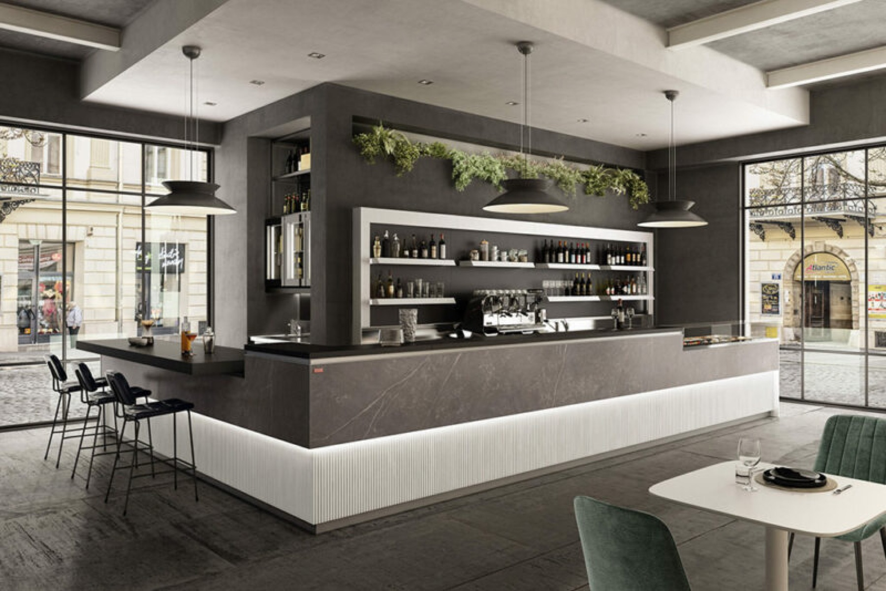
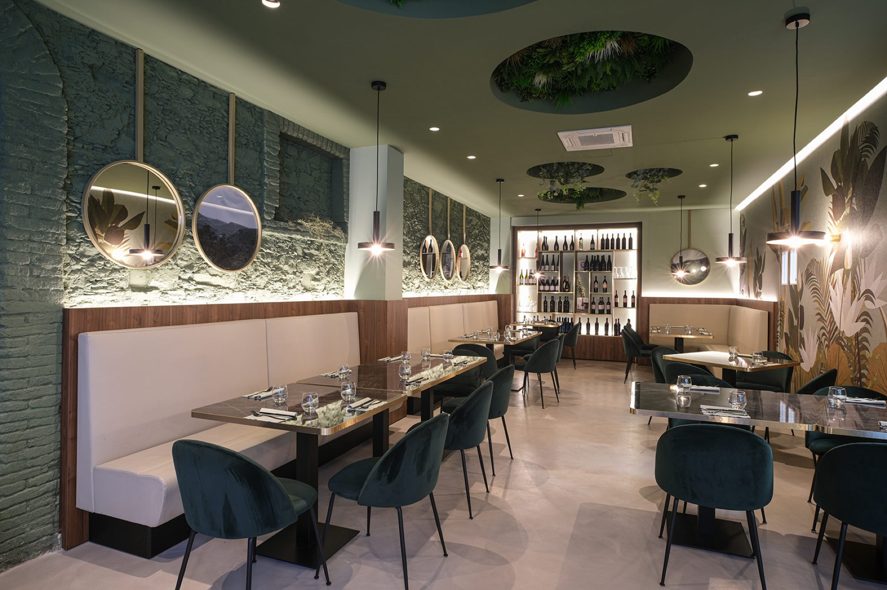
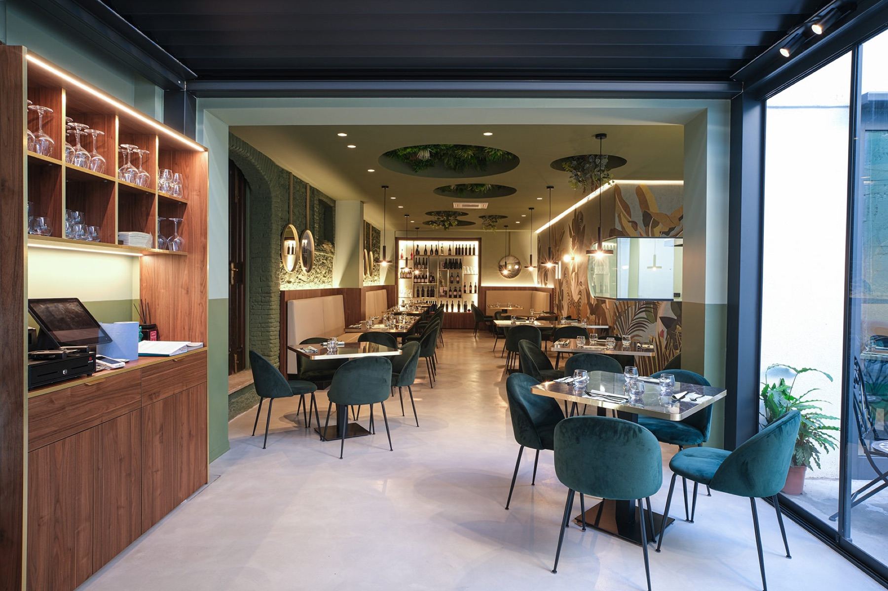

04 — Arredo bar & ristoranti
Il bancone è
la macchina del locale.
Prima di essere un oggetto di design è una postazione di lavoro: distanze, attrezzature sottopiano, passaggi del personale nelle ore di punta. Lo disegniamo sul flusso reale del servizio, poi lo vestiamo con i materiali del progetto.
Ambiti


Realizzazioni
Progetti
Arredo bar & ristoranti.
Filtra per ambito per vedere solo i progetti della categoria che ti interessa.

Nessuna realizzazione pubblicata per questo ambito.